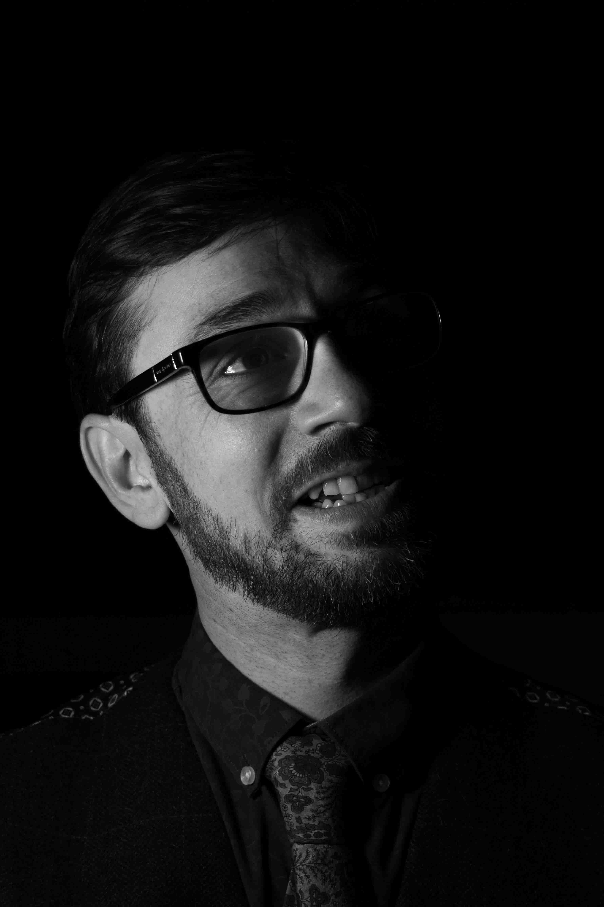

Listen to this page:
Aaron is an interdisciplinary scientist, science communicator and environmental campaigner working on the interface between reason and emotion in communication strategies related to the climate crisis. He was recently arrested as part of a group of scientists protesting against his government’s climate policies.
"Angry"

He tells me he wasn’t an angry person growing up: “But the more I sit with it - what’s being done - I’m filled with outrage, indignation, and ultimately righteous rage. Politicians, they are the real villains here. I want to hold them to account, for justice to be done - I’m not the criminal, they are the ones who are wrong! I have to be brave and to be brave I have to be angry. It’s easier for me to do because the science is so clear.”
"Bewildered"

“On a daily basis I look around and see business as usual and I wonder how we got into this mess”, he explains. “This bewilderment is sapping away at me as society carries on. I have to maintain my beliefs in the face of everyone else acting as if I’m crazy.” He tells me he feels very lonely, alienated. “It feels like we’ve been abandoned. The systems you think would be there to look after us - they don’t exist. It all seems so bizarre and absurd.”
"Anguished"

He struggles to put this one into words at first, “It’s just so horrible. I grew up on David Attenborough documentaries. But it’s so painful to see it destroyed. We’re not only doing harm - there are pockets of people healing, but it’s so overwhelmed by the destruction.” He tells me that it makes it hard to be in the wild places he loves. “I feel hurt everywhere I look. I just wish everyone could feel a connection to nature. Then they would fight as hard as I am.”
I ask him if he feels hope: “I think hope is a dangerous emotion - what are we hoping for, that it will be solved for us? If you mean an active hope, then I am hopeful that if enough of us did these things, mobilising, protesting. If we can build the momentum, it will spread - we can amplify each other. That’s the belief I have, that our actions ripple out. This is a battle - we have to organise to build counter power, and I’d rather spend all my life trying than think I hadn’t done enough. That’s my act of love for the world.”

Visit the project website